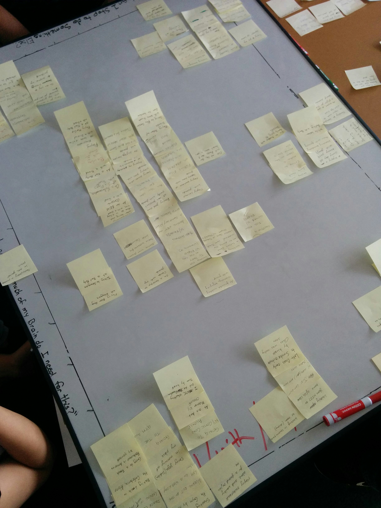
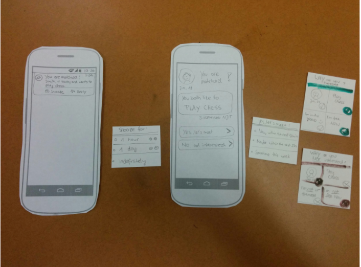
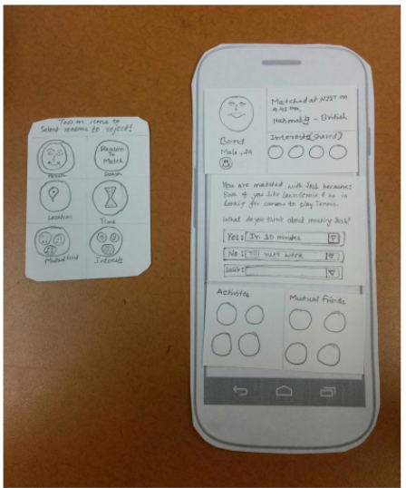
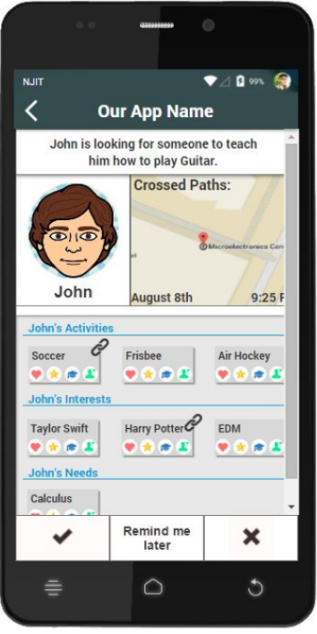
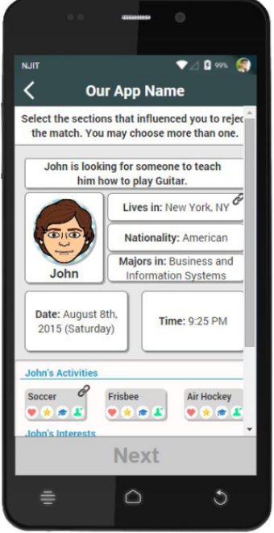

opportunistic social matching
Social matching recommends people to people. In an ideal world, such systems could be
context-aware, in that they would introduce users to each other in situations where they are mutually interested, available and open to meeting. This was the basis for Dr. Julia M. Mayer’s doctoral dissertation. I was a part of her team in the summer of 2015 to help design a prototype for her opportunistic social matching app.
This work was partially supported by a grant from the National Science Foundation 1422696.
My Roles : UX Designer
The Problems:
- What would a match look like?
- What would make a user act on a match?
- How could we learn from good and bad matches?
Most people know social matching from mobile dating apps like Tinder and Bumble. But what would a non-romantic match look like? Would we show a user’s picture? These were some of the fundamental questions we had to look at before we could start designing.
From prior research, we know that a user is more likely to act on a match if it was contextually rare and relevant to them. What information needs to appear on the screen?
A feedback screen is needed to understand why users did not want to act on a match. Was it because of the location or maybe bad timing? What makes a good match?
The Solutions:
Scenario-based design was used to answer the problems listed above.
Through brainstorming sessions, we collected a variety of possible match scenarios that allowed us to explore a variety of encounter opportunity situations, as well as different actions a user might want to take on an opportunity. We also used card sorting techniques to group similar match scenarios together.
Check out our match scenarios here

Once we identified the appropriate screens that needed to be created (1. Match Notification screen, 2. Match screen, and 3. Match Feedback screens) we started to build paper prototypes of these possible screens.


Axure was then used to create low-fidelity mock-ups. We decided that the “Reason-to-Match” should be the focal point on the screen. We also included a timestamp of when the user crossed paths with a match, as well as some other interests the user may have.
We decided against using a profile picture so that the user would not be biased in deciding to act on a match. We used avatars instead and we had an artist on the team draw the cartoon animal avatars visible below. Feedback screens were created by the user selecting what about the match made it good or bad. For example, if the user was in a certain location when the match was received, but now is in class, they could select “location” as a reason they did not accept the match.


A graphic designer on the team then created high-fidelity mock-ups using Sketch.

After we released the app, I helped Julia with post-study interviews to gain qualitative feedback on the app. We asked participants which of the opportunities they liked and which ones they disliked, and why. We were also interested in hearing how they would like an in-person meeting to be coordinated and supported through the application, and what were their thoughts on having a cartoon animal avatar instead of a real picture. We ended the interview by asking what they liked most and what they liked least about the application, as well as things they would like to see added or changed.
Some things people said about the app…
“It was pretty good because it was very simple. […] It was just punching a few buttons. I was actually looking forward to it. So when the notifications came in, I was like, Oh let me see. So I looked frequently at the app.”
“At first I was like, what is this all about. And as it kept going, I started to really get into it a little more, I was like, this is pretty cool, I like this, I could really see myself using it down the road, and telling friends about it.”
“Some of my friends saw me using the app, and they were like, where can I download this. And I was like, you can’t yet. But I think once you guys release it, it’s gonna be a lot of people, it’s gonna explode.”